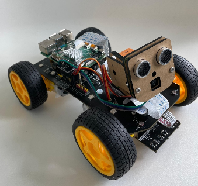
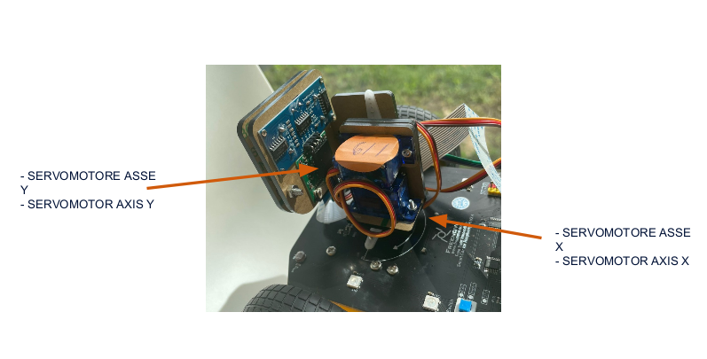
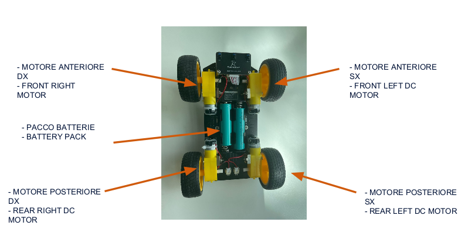
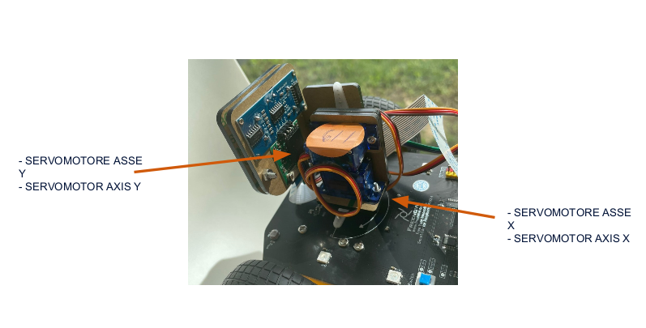
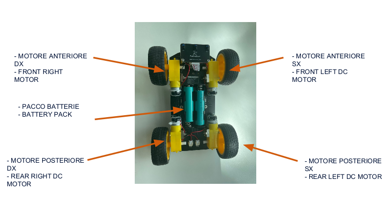
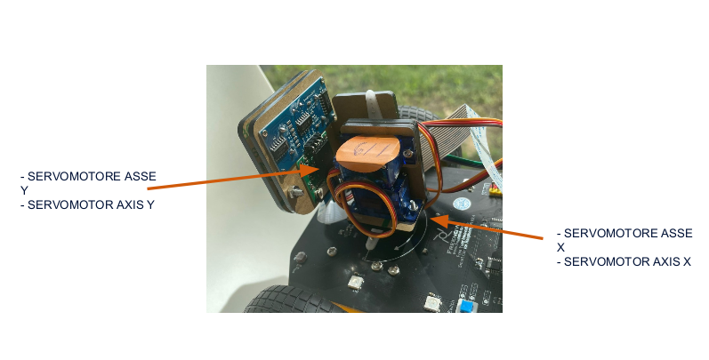
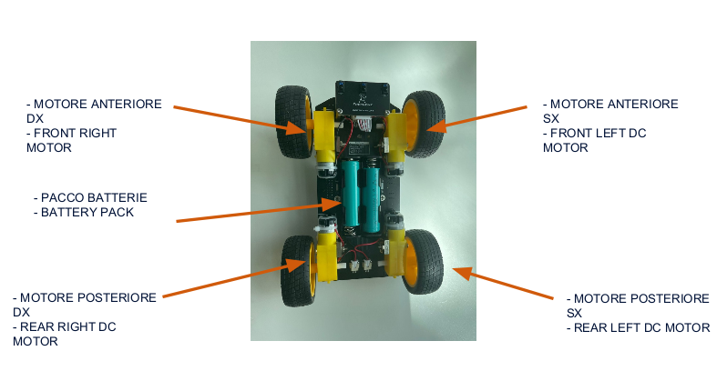
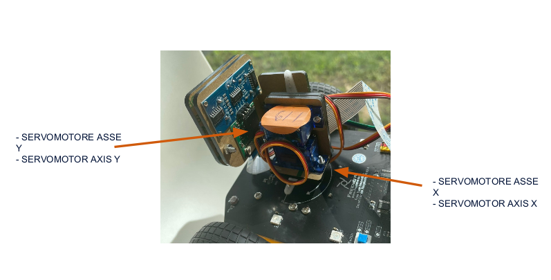
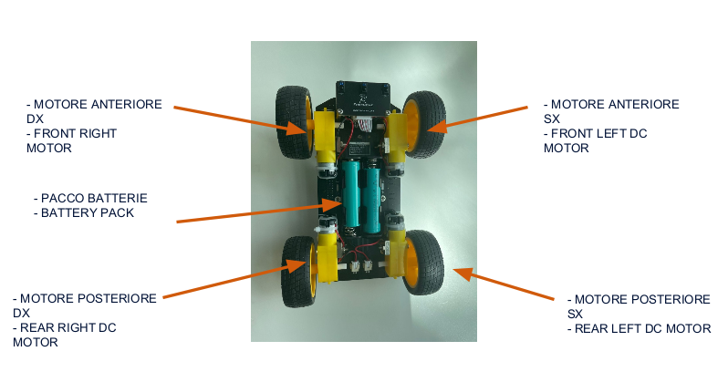

Gallery / Materials


 





My name is Vincenzo D'Agostino, I attend class 5E at the IIS Albert Einstein Institute, specializing in Computer Science. I am a curious person, passionate about technology, and always interested in understanding how things work, especially in the field of robotics and computer science.
During my PCTO experience, I took part in the ECHO project, an initiative in collaboration with Nokia involving the creation of a small robot equipped with sensors, motors, artificial intelligence, and advanced human-machine interaction features. I worked on hardware components such as servomotors (X and Y axes), DC motors for the four wheels, a Raspberry Pi for control, and ultrasonic sensors for the environment. Additionally, features such as voice-to-text, text-to-speech, image recognition via camera, and interaction with ChatGPT were integrated, enabling voice control in simulated situations (e.g., red/green traffic lights).
This project allowed me to engage with the world of robotics and artificial intelligence in a concrete and practical way. I learned how important the collaboration between hardware and software is and how emerging technologies can enhance human-machine interaction. I found it very stimulating to test the system with simulated traffic lights and voice commands, and to see the robot make autonomous decisions in real-time. This experience motivated me to continue my studies in the technology field.

